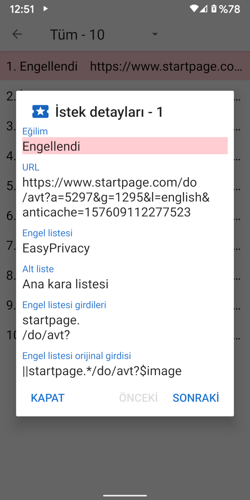

Bir URL yüklendiğinde, genellikle CCS, JavaScript, resim ve diğer dosyalar için birkaç kaynak isteği yapar. Bu isteklerle ilgili detaylar İstekler etkinliğinden ulaşılabilir. Gezinti çekmecesi, İstekler etkinliğine götüren bir bağlantı içerir ve ayrıca bu etkinlik kaç tane isteğin engellediğini gösterir. Bir isteğe dokunulduğunda, neden izin verildiğine ya da engellendiğine dair detaylar görüntülenir.
Clear Browser, Adblock sözdizimini (Adblock syntax) temel alan 4 yaygın engel listesini içerir: EasyList, EasyPrivacy, Fanboy’s Annoyance List ve Fanboy’s Social Blocking List. Bu engel listeleri, Clear Browser tarafından, aşağıda listelenmiş olan kaynak isteklerini kontrol eden 22 alt listeye göre işlenmiştir.
Başlangıç listeleri, URL'nin başlangıcına göre kontrol eder. Final listeleri, URL'nin sonuna göre kontrol eder. Domain listeleri, yalnızca belli domainlere göre kontrol eder. Üçüncü taraf listeleri, yalnızca isteğin kök domaini ana URL'nin kök domaininden farklıysa uygulanır. Düzenli ifade listeleri, düzenli ifade sözdizimini (regular expression syntax) takip eder. Her alt liste öğesinin bir veya daha fazla girdisi vardır. Domain alt listeleri işe karıştığında, ilk girdi ana URL'nin domaini ile eşleşirse, kaynak isteği yalnızca öğeye göre kontrol edilir.
Anroid’in WebView kısıtlamaları yüzünden ve isteklerin işlenmesini hızlandırmak için Clear Browser, Adblock sözdiziminin basitleştirilmiş bir yorumunu uygular. Bu durum, bazen, kaynakların orijinal girdi tarafından amaçlanmayan şekillerde izin verildiği veya engellendiği yanlış pozitif (false positive) durumuna yol açabilir. Engel listesi girdilerinin nasıl işlendiğine dair daha ayrıntılı bir açıklama stoutner.com adresinde bulunabilir.
Clear Browser'a 3 yeni engel listesi eklendi.
UltraList ve UltraPrivacy,
EasyList ve EasyPrivacy'nin engellemediği reklamları ve izleyicileri de engeller. Üçüncü liste ise tüm üçüncü taraf istekleri engeller.
Bir istek yalnızca, isteğin temel domaini bağlantının temel domaininden farklıysa üçüncü taraf olarak kabul edilir.
Örneğin, www.website.com adresi images.website.com adresinden bir resim yüklüyorsa,
her ikisi de aynı temel domaini (website.com) paylaştığı için bu üçüncü taraf isteği olarak engellenmez.
Tüm üçüncü taraf istekleri engellemek gizliliği arttırır, fakat çok sayıda web sitesini bozduğu için bu engel listesi varsayılan olarak devre dışıdır.